PhD in Electrical Engineering
Doctoral research within ANCHOR on Radio Stripes-underpinned cell-free massive MIMO for large coverage and high mobility.
PhD Researcher in Electrical Engineering
Developing next-generation wireless systems at the intersection of Radio Stripes, cell-free massive MIMO, 5G/6G, NR-V2X, and high-mobility communications.
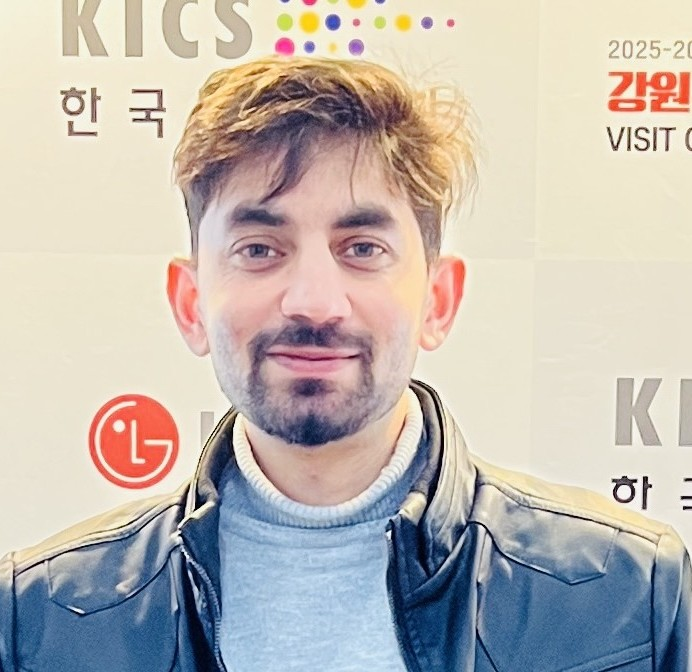
Core research areas
Key achievements
Profile
Daud Khan is a Marie Skłodowska-Curie Fellow in the ANCHOR project at Instituto de Telecomunicações and a PhD researcher in Electrical Engineering at the University of Aveiro. His doctoral work focuses on Radio Stripes-underpinned cell-free massive MIMO for wide coverage and reliable connectivity in high-mobility environments.
His earlier work at Inha University, South Korea, combined 5G NR-V2X, cooperative perception, multi-sensor fusion, and deep reinforcement learning to advance Level 4 autonomous driving. He has authored SCI-indexed research, contributed to filed patents and registered software, and worked on government-funded telecommunications projects.
Academic journey
Doctoral research within ANCHOR on Radio Stripes-underpinned cell-free massive MIMO for large coverage and high mobility.
GPA: 4.07/4.50. Thesis on Level 4 urban-intersection autonomy using EKF-based multimodal V2X sensor fusion and deep reinforcement learning.
GPA: 3.19/4.00. Thesis on an on-grid solar PV-powered system for university campuses.
Appointments
ANCHOR (Advanced Network Connectivity using Harmonious Optical and Radio Technologies), a Horizon Europe Marie Skłodowska-Curie Doctoral Network, supported through an MSCA fellowship.
Worked on three IITP Korea-supported projects focused on 5G NR-V2X technologies for autonomous-driving services.
Researched and published an optimized renewable-energy model for a solar-powered university campus.
Research portfolio
Select an area to see how it connects to my current doctoral work and previous research in autonomous and networked systems.
Low-latency Uu/PC5 links, cooperative perception, sensor sharing, radio-resource management, and reliable decision support for Level 4 autonomous-driving scenarios.
Distributed radio access along flexible Radio Stripes, user-centric cell-free processing, seamless handover, and robust connectivity across wide areas and high-mobility environments.
PPO, dual-attention policies, actor-critic learning, multi-agent control, and context-aware decision systems for intelligent wireless networks and autonomous mobility.
Predictive handover, dual connectivity, context-aware interface selection, and mobility orchestration for uninterrupted V2X communications in dense urban networks.
Integrated aerial, satellite, and terrestrial platforms for extended coverage, resilient mobility, three-dimensional networking, and seamless service continuity.
Communication-aware renewable integration, data-driven energy management, and reliable network support for sustainable smart-grid and campus-energy systems.
Selected work
Four externally supported projects spanning future 6G access, connected mobility, V2X service delivery, and three-dimensional communications.
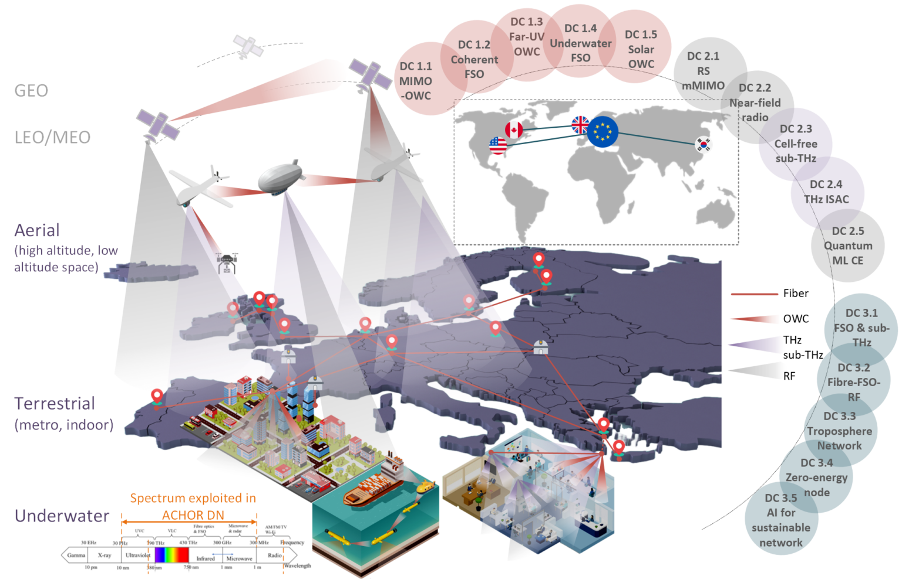
Advanced Network Connectivity using Harmonious Optical and Radio Technologies
A Horizon Europe Marie Skłodowska-Curie Doctoral Network advancing sustainable 6G and beyond connectivity across underwater, terrestrial, aerial, and space platforms.
MSIT Grant · Project No. 2022-0-00521 · IITP Korea
Research on dependable 5G NR-V2X communication and cooperative perception to support Level 4 autonomous-driving services in complex urban environments.
MSIT Grant · Project No. 2021-0-01140 · IITP Korea
Development and evaluation of high-speed V2X communication services for connected autonomous vehicles, emphasizing reliability and rapid information exchange.
MSIT Grant · Project No. 2021-0-00794 · IITP Korea
Research on integrated terrestrial, aerial, and space communication technologies to extend coverage and strengthen resilient mobility support.
Research output
Peer-reviewed journal articles, manuscripts under review, and conference contributions.
Daud Khan, S. Aslam, S. Mondal, and K. H. Chang · Robotics and Autonomous Systems · IF: 6.0
Daud Khan, S. Aslam, and K. H. Chang · IEEE Access, vol. 13, pp. 50122-50136 · IF: 4.2
S. Aslam, Daud Khan, S. Mondal, and K. H. Chang · Vehicular Communications · IF: 5.7
S. Aslam, Daud Khan, and K. H. Chang · Sensors, vol. 24, pp. 1-22 · IF: 4.0
S. Mondal, S. Aslam, Daud Khan, and K. H. Chang · IEEE Access, vol. 13, pp. 196509-196525 · IF: 4.2
Daud Khan, S. Aslam, A. U. Rehman, A. Afridi, A. Manan, and R. Wichman · Submitted to IEEE Open Journal of the Communications Society · IF: 6.2
Under first reviewM. Ayaz, H. A. Khan, Daud Khan, S. T. Jan, and G. Rukh · Submitted to Electric Power Systems Research · IF: 4.3
Under first reviewDaud Khan, S. Aslam, and K. H. Chang · KICS Summer Conference · 2024
S. Mondal, Daud Khan, S. Aslam, and K. H. Chang · KICS Winter Conference · 2025
S. Siddique, S. Mondal, Daud Khan, and K. H. Chang · CTCon, Japan · 2025
Daud Khan, R. Hadi, M. Farhan, A. Aziz, and K. Ur Rehman · ICSET 2022
Innovation
KyungHi Chang, Daud Khan, and Sawera Aslam · Patent No. 10-2025-0109562 · Filed August 8, 2025
KyungHi Chang, Sawera Aslam, and Daud Khan · Patent No. 10-2025-0109024 · Filed August 7, 2025
KyungHi Chang, Sudeb Mondal, Sawera Aslam, and Daud Khan · Patent No. 10-2025-0192623 · Filed December 8, 2025
Daud Khan, Sawera Aslam, and KyungHi Chang · Korea Copyright Commission · Program No. C-2025-030562 · Registered August 11, 2025
Sawera Aslam, Daud Khan, and KyungHi Chang · Korea Copyright Commission · Program No. C-2025-029328 · Registered August 1, 2025
Recognition
ANCHOR Horizon Europe Doctoral Network · Instituto de Telecomunicações
Full tuition scholarship · Inha University · 2024-Present
Korean Government-funded scholarship · 2024-Present
Mobile Telecommunication Research Lab · 2024-Present
Professional Educational Foundation · 2018-2022
The Orbit College, Thand Koi · 2016-2018
Beyond the lab
Research, academic, professional, and graduation moments.


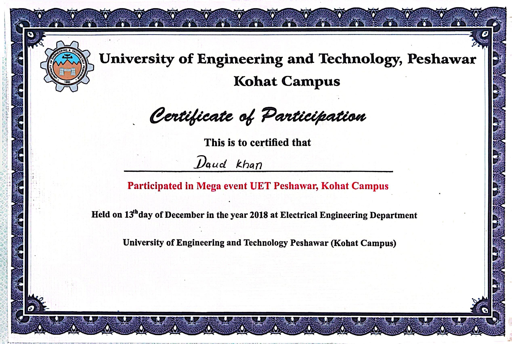
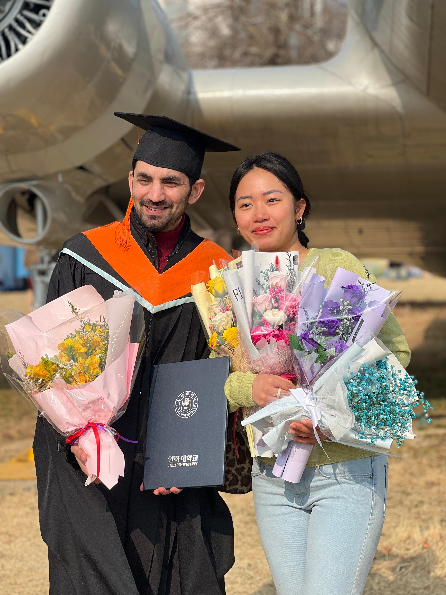
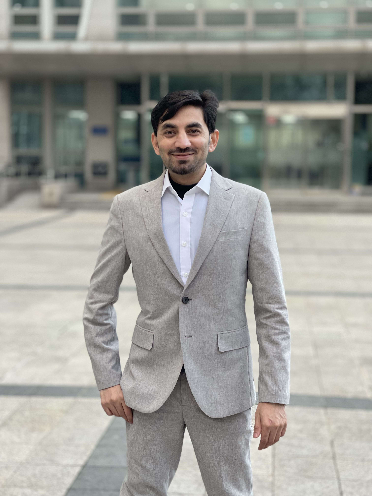
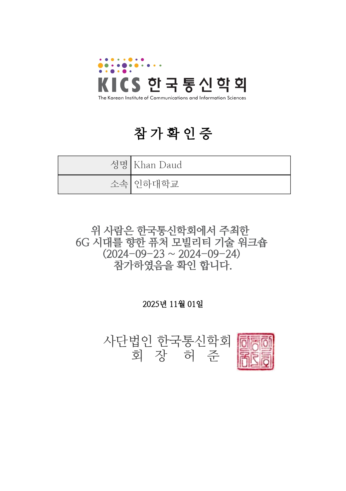
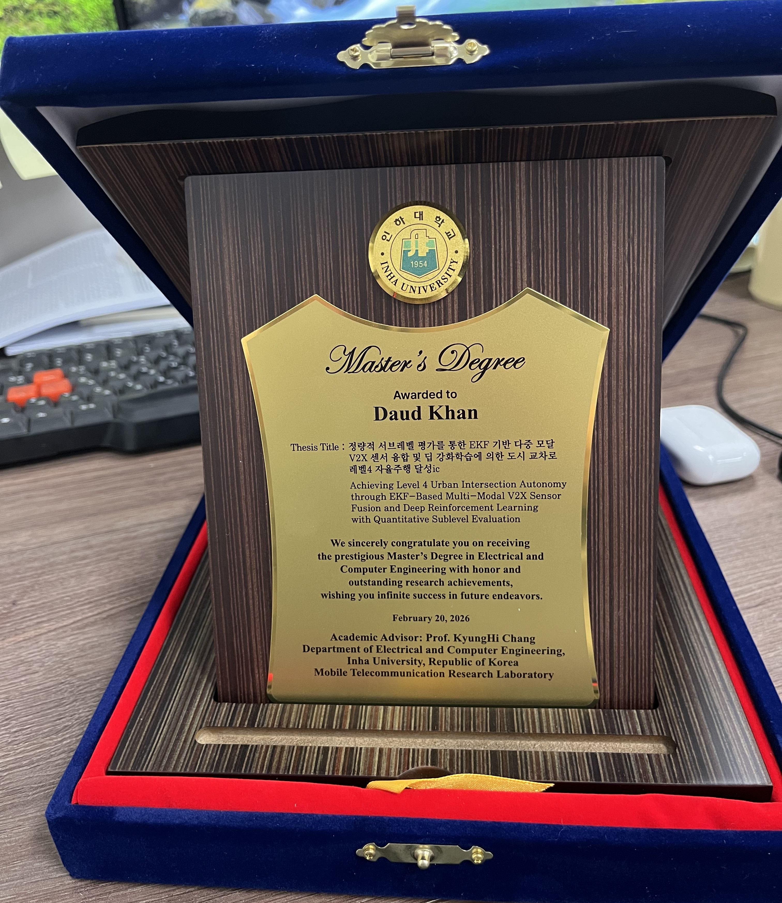
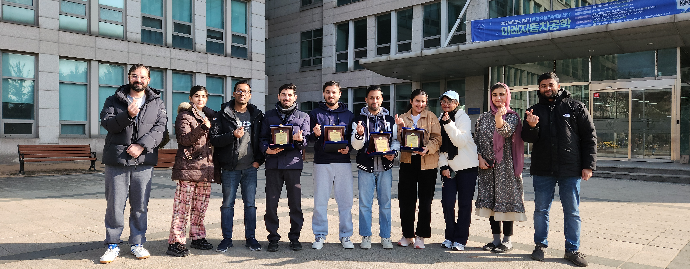
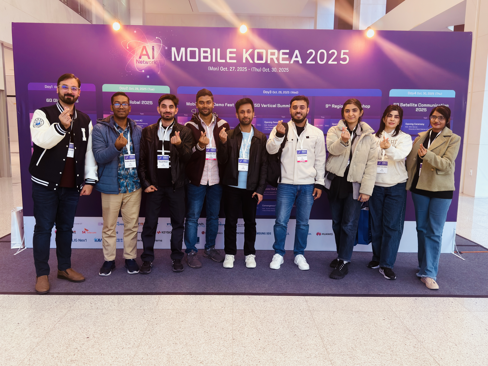
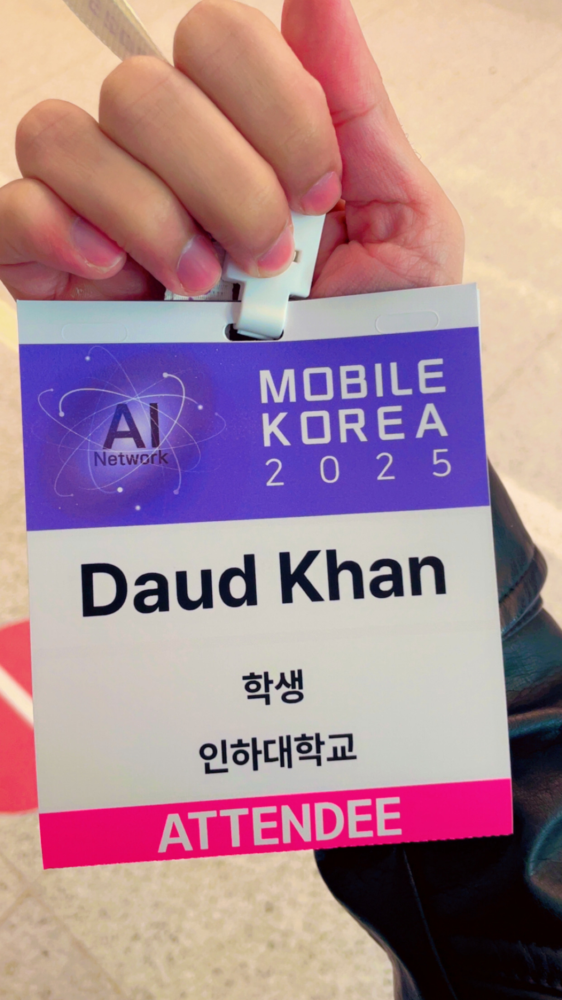
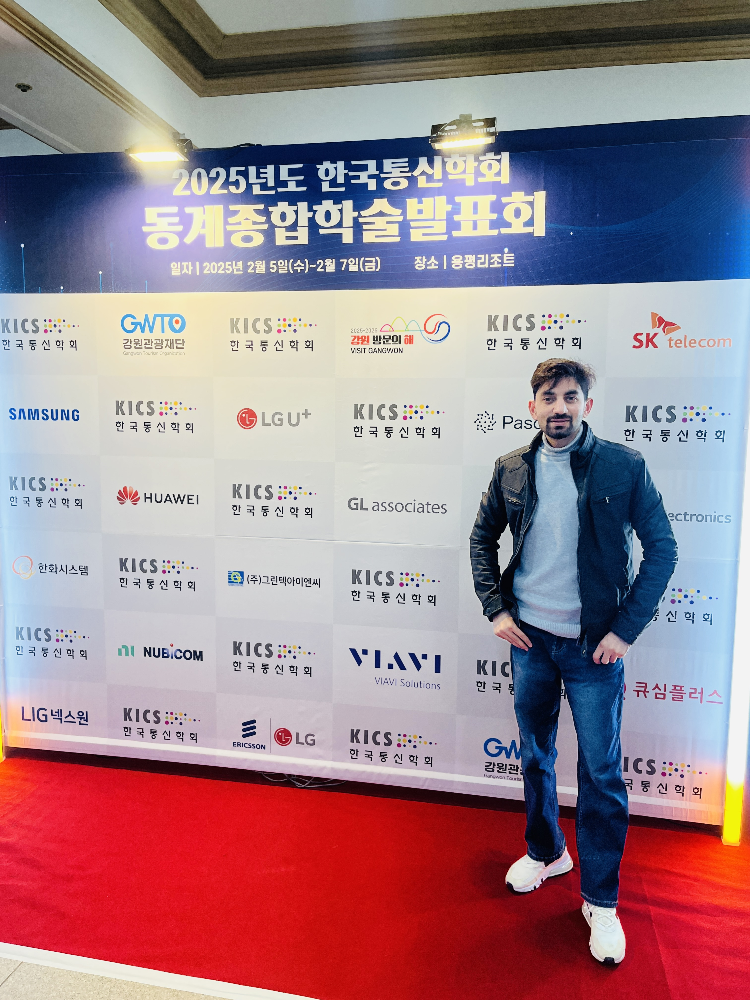
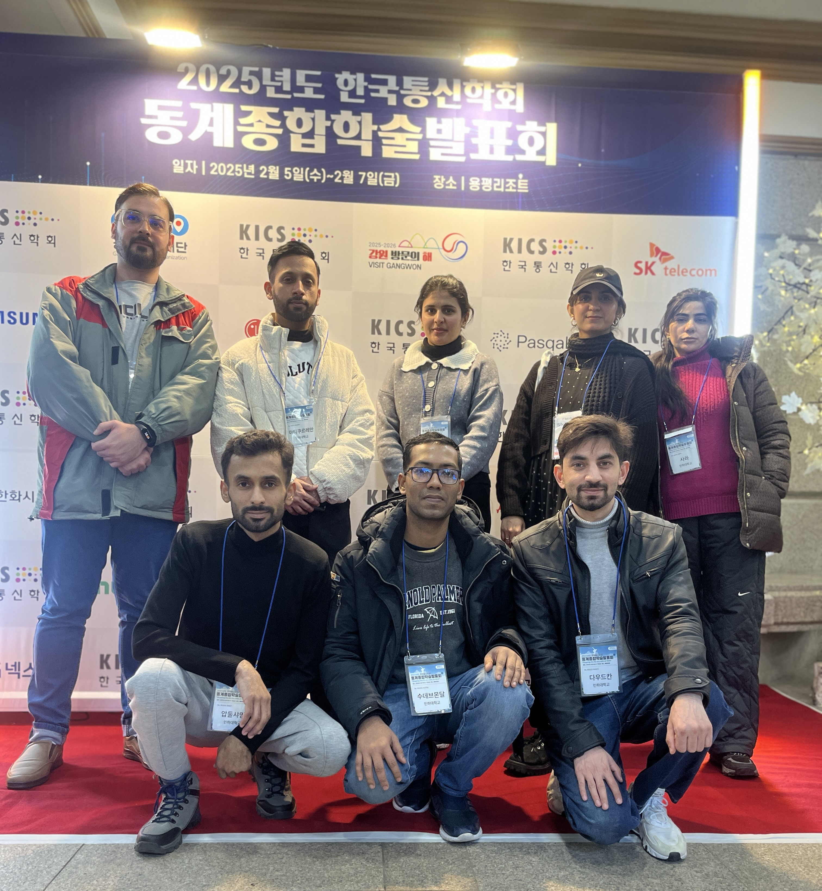
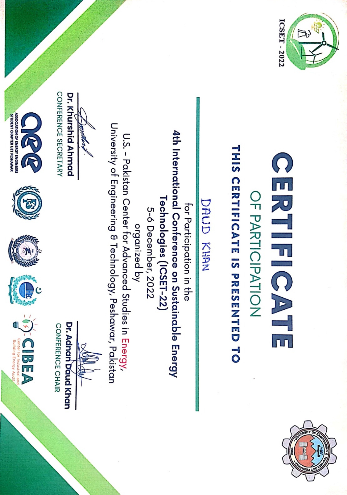

Get in touch
Open to research collaborations and academic opportunities in advanced wireless communication systems.